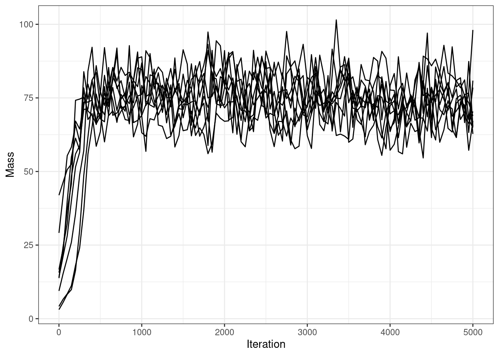
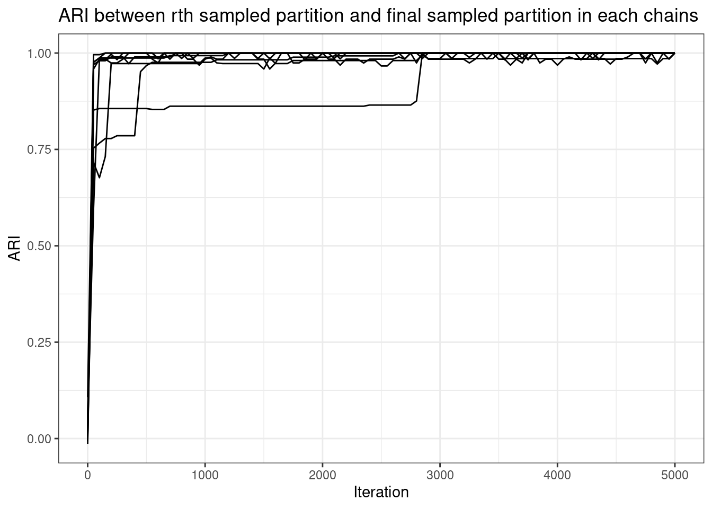
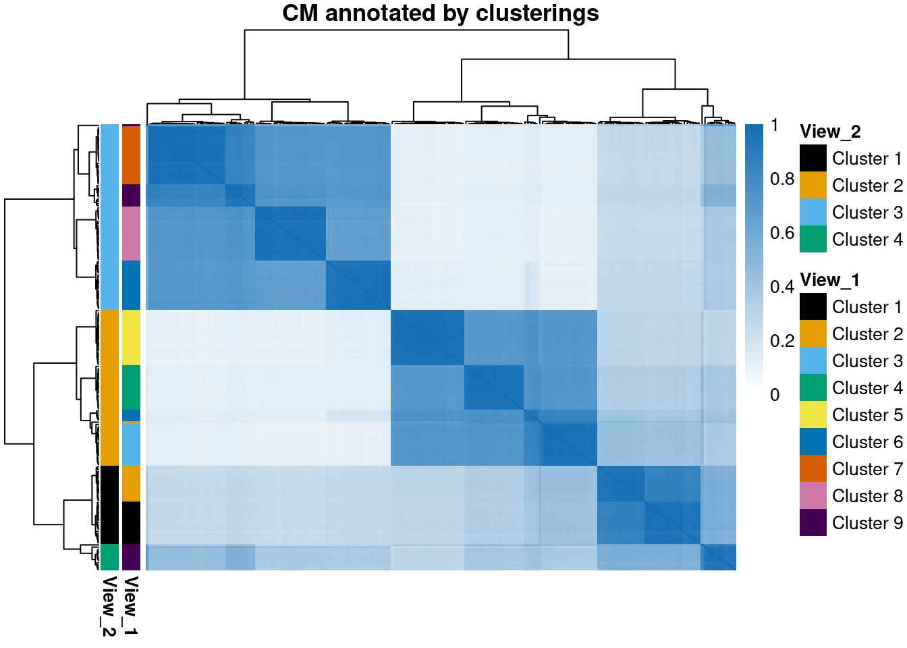
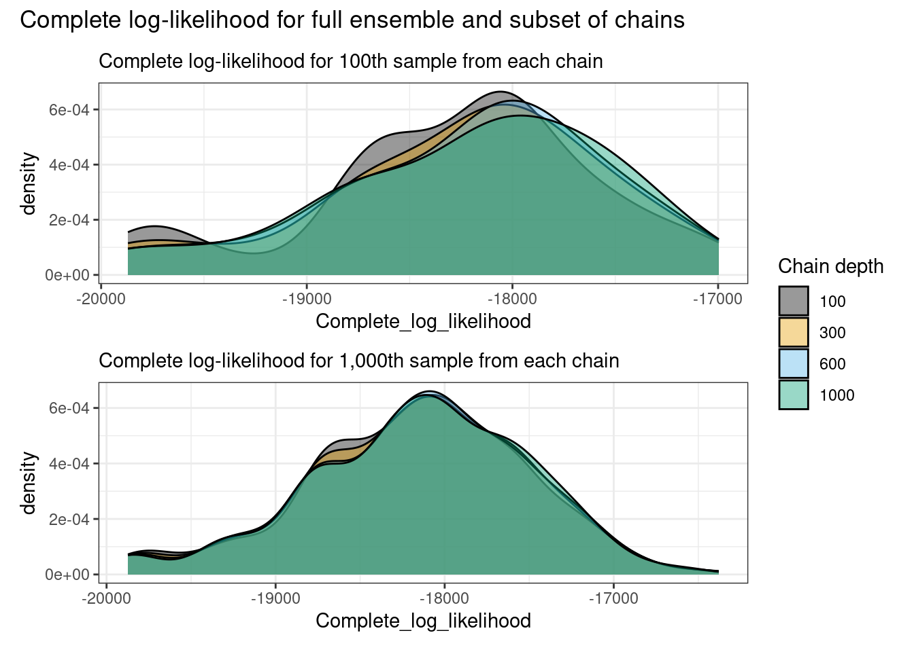
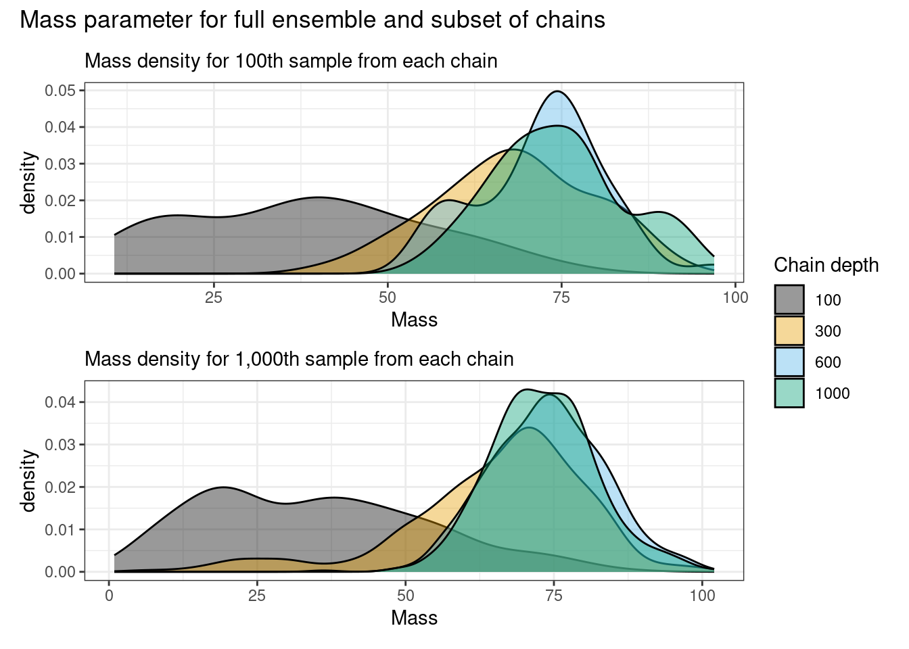
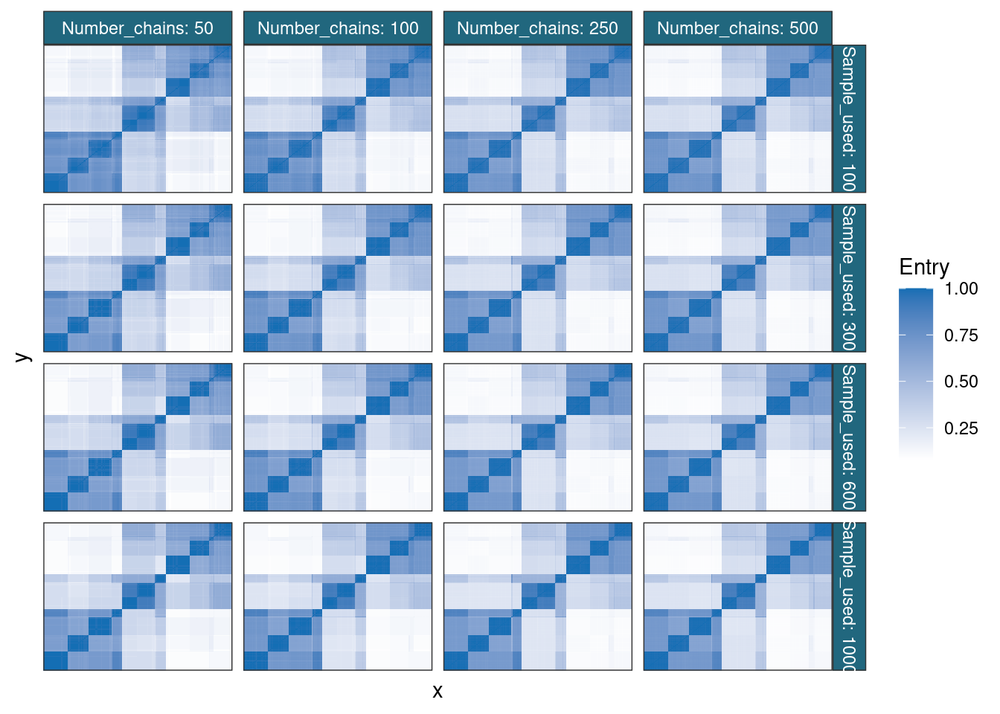
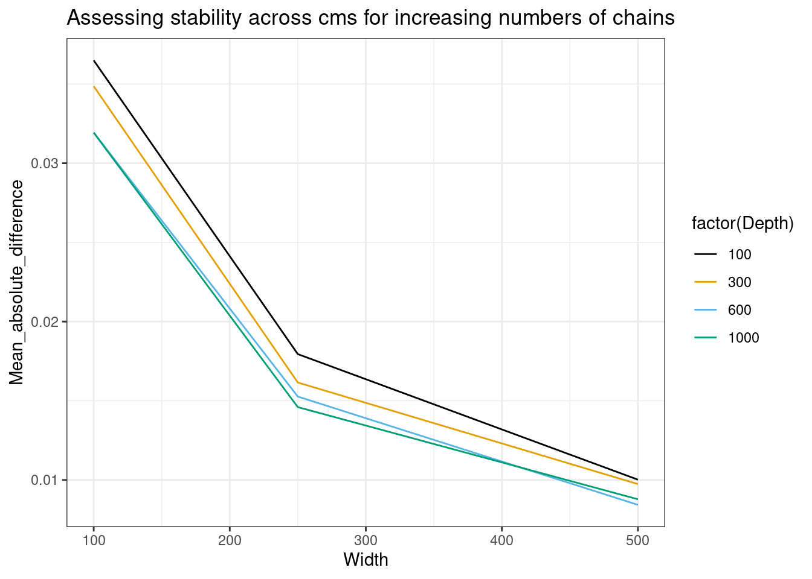
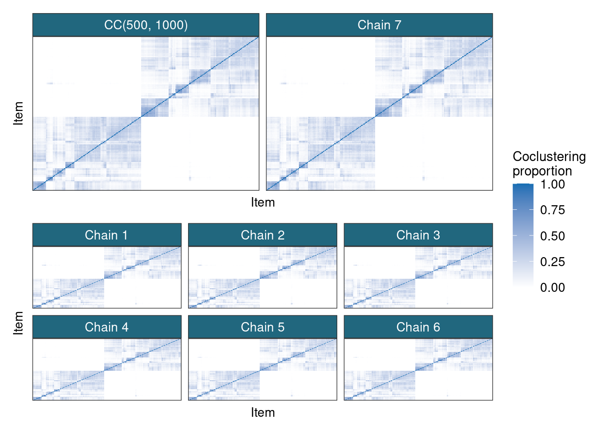

![]()
Consensus clustering for Bayesian methods
Inputs:
W: the number of chains to run
D: the number of iterations to run each chain for
sampler: the MCMC sampler for the method
priorDraw(): a method of drawing a sample from the prior distribution over the clustering space (this is often integrated into the sampler in practice)
Output:
c: a matrix of sampled partitions
Algorithm:
for(w in 1:W) {
# Differentiate the model runs using the random seed
set.seed(w);
c_0 <- prior();
for(r in 1:R) {
# Sample a new clustering based on the current partition
c_r <- sampler(c_r);
}
# Save the last iteration
c[w] <- c_r
}Summary
Paper: Consensus Clustering for Bayesian Mixture Models
- Aim: Perform inference on Bayesian clustering methods when chains do not converge without reimplementation
- Pros: Easy to use and offers useful inference
- Cons: Inference is no longer Bayesian
Introduction
The first paper of my PhD was entitled “Consensus Clustering for Bayesian Mixture Models” and written with my supervisors Paul and Chris. I think that the paper is a little confused, but it covers some nice work. To overcome the issue of poor mixing that haunts Bayesian clustering, we proposed a heuristic method based on the consensus clustering algorithm of Monti et al. (2003) that appears to enable principled inference without reimplementing the sampler. However, the inference does lose the Bayesian interpretation.
If you have attempted to infer discrete latent structure using a Bayesian method implemented using Markov Chain Monte Carlo (MCMC) methods, then you’ve probably encountered the problem of poor mixing where chains become trapped in different clusterings and stop exploring the parameter space.There is a large body of literature about methods for navigating this problem in a principled fashion (see, e.g., Dahl 2003; Jain and Neal 2004; Bouchard-Côté, Doucet, and Roth 2017; Syed et al. 2022), but these state-of-the-art samplers tend to be time-consuming to implement. In this paper we proposed taking samples from many (relatively) short chains rather than a single long chain. This idea has seen a lot of mileage recently across a few different papers, but where we differ is we surrender our claim of being truly Bayesian. We have to do this as, while it is possibly that our samples are drawn from the target density, they are unlikely to be weighted correctly. However, we found that the expected values from the distributions sampled this way tended to be correct even if the variance might be too large.
Algorithm
The basic method is sketched below:
Obviously one can sample more quantities than just the clustering (as we do in the paper), but I think that clustering works particularly well with short chains. This is because we often care about co-clustering probabilities across sampled partitions rather than any single sample being correct; this means that if there is enough variety across a large number of poor (but better than random) sampled partitions we might still infer the correct structure. For other variables we need longer chains to have the correct expected value from our sampled distribution.
How to use consensus clustering in practice for Bayesian methods
In this post I want to show how to use consensus clustering. First, let’s generate some data. I generate data with two overlapping clustering structures which emerge in different features (this aspect of the data is sometimes referred to as having two different views of the clustering). This ensures multi-modality is present. The data has 200 samples, 15 variables informing each clustering and 40 noise variables. The first clustering has 4 clusters, the second 9 that are (approximately) nested in the first less fine clustering.
# For ggplot2 theme and data simulation
library(mdiHelpR)
Attaching package: 'mdiHelpR'The following object is masked from 'package:methods':
show# For mixture models
library(MDIr)
Attaching package: 'MDIr'The following objects are masked from 'package:mdiHelpR':
createSimilarityMat, findOrder, generateGaussianDataset,
generateSimulationDatasetlibrary(magrittr)
library(patchwork)
library(tidyr)
Attaching package: 'tidyr'The following object is masked from 'package:magrittr':
extractlibrary(ggplot2)
library(dplyr)
Attaching package: 'dplyr'The following objects are masked from 'package:stats':
filter, lagThe following objects are masked from 'package:base':
intersect, setdiff, setequal, unionset.seed(1)
setMyTheme()
N <- 200
P <- c(15, 15)
P_n <- 20
delta_mu <- c(0.8, 1.1)
K <- c(9, 4)
pi <- list()
pi[[1]] <- rep(1 / K[1], K[1])
pi[[2]] <- c(2, 4, 4, 1)
pi[[2]] <- pi[[2]] / sum(pi[[2]])
n_views <- 2
my_df <- my_data <- NULL
group_IDs <- matrix(0, nrow = N, ncol = n_views)
for (ii in seq(1, n_views)) {
.x <- generateSimulationDataset(K[ii],
N,
P[ii],
delta_mu = delta_mu[ii],
pi = pi[[ii]],
p_n = P_n
)
.data <- scale(.x$data)
group_IDs[, ii] <- .x$cluster_IDs
.df <- .data |>
as.data.frame()
.df[[paste0("Group", ii)]] <- .x$cluster_IDs
if (ii == 1) {
my_df <- .df
my_data <- .data
} else {
my_df <- cbind(my_df, .df)
my_data <- cbind(my_data, .data)
}
}
# annotatedHeatmap(my_data, group_IDs[, 1])
# annotatedHeatmap(my_data, group_IDs[, 2])
# Create the annotation data.frame for the rows
anno_row <- data.frame(
"View_1" = factor(paste("Cluster", group_IDs[, 1])),
"View_2" = factor(paste("Cluster", group_IDs[, 2]))
) |>
magrittr::set_rownames(rownames(my_data))
ann_colours <- list(
"View_1" = c(ggthemes::colorblind_pal()(8), viridis::viridis(1)),
"View_2" = ggthemes::colorblind_pal()(4)
)
names(ann_colours$View_1) <- paste("Cluster", seq(1, K[1]))
names(ann_colours$View_2) <- paste("Cluster", seq(1, K[2]))
# Create the heatmap
ph <- pheatmap::pheatmap(my_data,
color = dataColPal(),
breaks = defineDataBreaks(my_data, dataColPal(), 0),
annotation_row = anno_row,
annotation_colors = ann_colours,
main = "Generated data annotated by clusterings",
show_colnames = FALSE,
show_rownames = FALSE
)
phGuessing chain length
To use consensus clustering, we want to have an idea of how long we will need to run the chains for. In this case we run a small number of chains for longer than necessary and the look at trace plots to see when they stopped exploring or the degree of exploration had tapered off significantly.
n_initial_chains <- 9
R_long <- 5000
thin_long <- 50
iterations_initial <- seq(0, R_long, thin_long)
n_samples <- floor(R_long / thin_long) + 1
type <- "G"
psms <- initial_mcmc <- vector("list", n_initial_chains)
likelihood_df <- matrix(0, nrow = n_samples - 1, ncol = n_initial_chains)
colnames(likelihood_df) <- paste0("Chain", seq(1, n_initial_chains))
ari_mat <- concentration_df <- matrix(0, nrow = n_samples, ncol = n_initial_chains)
colnames(ari_mat) <- colnames(concentration_df) <- paste0("Chain", seq(1, n_initial_chains))
ensemble_psm <- matrix(0, nrow = N, ncol = N)
for (ii in seq(1, n_initial_chains)) {
initial_mcmc[[ii]] <- .mcmc <- callMixtureModel(my_data, R_long, thin_long, type)
likelihood_df[, ii] <- .mcmc$complete_likelihood[-1]
concentration_df[, ii] <- .mcmc$mass
ari_mat[, ii] <- apply(.mcmc$allocations, 1, function(x) {mcclust::arandi(x, .mcmc$allocations[n_samples, ])})
.psm <- makePSM(initial_mcmc[[ii]]$allocations)
row.names(.psm) <- colnames(.psm) <- row.names(my_data)
psms[[ii]] <- .psm
ensemble_psm <- ensemble_psm + .psm
}
ensemble_psm <- ensemble_psm / n_initial_chainsari_df <- ari_mat |>
as.data.frame() |>
mutate(Iteration = iterations_initial) |>
pivot_longer(-Iteration, names_to = "Chain", values_to = "ARI")
likelihood_df2 <- likelihood_df |>
as.data.frame() |>
mutate(Iteration = iterations_initial[-1]) |>
pivot_longer(-Iteration, names_to = "Chain", values_to = "Complete_log_likelihood")
mass_df <- concentration_df |>
as.data.frame() |>
mutate(Iteration = iterations_initial) |>
pivot_longer(-Iteration, names_to = "Chain", values_to = "Mass")
likelihood_df2 |>
ggplot(aes(x = Iteration, y = Complete_log_likelihood, group = Chain)) +
geom_line() +
ggthemes::scale_color_colorblind()mass_df |>
ggplot(aes(x = Iteration, y = Mass, group = Chain)) +
geom_line() +
ggthemes::scale_color_colorblind()
ari_df |>
ggplot(aes(x = Iteration, y = ARI, group = Chain)) +
geom_line() +
ggthemes::scale_color_colorblind() +
labs(title = "ARI between rth sampled partition and final sampled partition in each chains")
psm <- makePSM(.mcmc$allocations)
row.names(psm) <- colnames(psm) <- row.names(my_data)
# Create the heatmap of the PSM
pheatmap::pheatmap(psm,
color = simColPal(),
breaks = defineBreaks(simColPal(), lb = 0),
annotation_row = anno_row,
annotation_colors = ann_colours,
main = "Example PSM annotated by clusterings",
show_rownames = FALSE,
show_colnames = FALSE
)psm_df <- prepSimilarityMatricesForGGplot(psms)
psm_df |>
ggplot(aes(x = x, y = y, fill = Entry)) +
geom_tile() +
facet_wrap(~Chain) +
scale_fill_gradient(
low = "#FFFFFF",
high = "#146EB4"
) +
labs(title = "PSMs for initial chains with common ordering")These long chains have stopped exploring new clusterings almost instantly. The mass parameter takes awhile to converge, but this is sampled via Metropolis-Hastings, so this makes sense.
These PSMs also show why nested \(\hat{R}\) and coupling don’t work for clustering. These methods assume that the different chains can eventually reach similar places; this is unlikely to happen in any reasonable length of time in even as low-dimensional an example as this (70 features; hardly low-dimensional in many settings, but that’s one of the joys of ’omics).
Consensus clustering
Now having an idea that the chains have found whatever structure they are going to find by the 100th iteration, we run an ensemble of chains for an excessive 1,000 iterations.
D_considered <- c(100, 300, 600, 1000)
D <- max(D_considered)
number_depths <- length(D_considered)
W_considered <- c(50, 100, 250, 500)
W <- max(W_considered)
number_chains <- length(W_considered)
models <- expand.grid(D_considered, W_considered)
colnames(models) <- c("Depth", "Width")
n_models <- nrow(models)
thin <- 100
iterations <- seq(0, D, thin)
allocation_list <- consensus_chains <- vector("list", W)
consensus_matrix <- matrix(0, nrow = N, ncol = N)
consensus_matrices <- vector("list", n_models)
allocations <- vector("list", length(D_considered))
# account for saving of 0th iterations
samples_extracted <- (D_considered / thin) + 1for (ii in seq(1, W)) {
.mcmc <- callMixtureModel(my_data, D, thin, type)
for (jj in seq(1, number_depths)) {
curr_d <- D_considered[jj]
sample_used <- samples_extracted[jj]
.alloc <- .mcmc$allocations[sample_used, ]
.ll <- .mcmc$complete_likelihood[sample_used]
.mass <- .mcmc$mass[sample_used]
.lkl_entry <- data.frame(
"Complete_log_likelihood" = .ll,
"D" = curr_d,
"Chain" = ii
)
.mass_entry <- data.frame(
"Mass" = .mass,
"D" = curr_d,
"Chain" = ii
)
if (ii == 1) {
allocations[[jj]] <- .alloc
lkl_df <- .lkl_entry
mass_df <- .mass_entry
} else {
allocations[[jj]] <- rbind(allocations[[jj]], .alloc)
lkl_df <- rbind(lkl_df, .lkl_entry)
mass_df <- rbind(mass_df, .mass_entry)
}
}
}
cms <- vector("list", n_models)
for (ii in seq(1, number_chains)) {
curr_w <- W_considered[ii]
chains_used <- seq(1, curr_w)
for (jj in seq(1, number_depths)) {
curr_cm_index <- (ii - 1) * number_depths + jj
curr_d <- D_considered[jj]
.cm <- makePSM(allocations[[jj]][chains_used, ])
row.names(.cm) <- colnames(.cm) <- row.names(my_data)
cms[[curr_cm_index]] <- .cm
}
}
cc_lst <- list(
"CMs" = cms,
"likelihood_df" = lkl_df,
"mass_df" = mass_df,
"allocations" = allocations
)We use the CM from the largest number of chains and deepest sample for some visualisation, annotating by the two different generating clusterings.
pheatmap::pheatmap(cms[[9]],
color = simColPal(),
breaks = defineBreaks(simColPal(), lb = 0),
annotation_row = anno_row,
annotation_colors = ann_colours,
main = "CM annotated by clusterings",
show_colnames = FALSE,
show_rownames = FALSE
)
Then we consider the trace plots for different samples and numbers of chains.
p_lkl_100 <- lkl_df |>
filter(Chain < W_considered[1]) |>
ggplot(aes(x = Complete_log_likelihood, group = D)) +
geom_density(aes(fill = factor(D)), alpha = 0.4) +
ggthemes::scale_fill_colorblind() +
labs(fill = "Chain depth", subtitle = "Complete log-likelihood for 100th sample from each chain")
p_lkl_all <- lkl_df |>
ggplot(aes(x = Complete_log_likelihood, group = D)) +
geom_density(aes(fill = factor(D)), alpha = 0.4) +
ggthemes::scale_fill_colorblind() +
labs(fill = "Chain depth", subtitle = "Complete log-likelihood for 1,000th sample from each chain")
p_mass_100 <- mass_df |>
filter(Chain < W_considered[1]) |>
ggplot(aes(x = Mass, group = D)) +
geom_density(aes(fill = factor(D)), alpha = 0.4) +
ggthemes::scale_fill_colorblind() +
labs(fill = "Chain depth", subtitle = "Mass density for 100th sample from each chain")
p_mass_all <- mass_df |>
ggplot(aes(x = Mass, group = D)) +
geom_density(aes(fill = factor(D)), alpha = 0.4) +
ggthemes::scale_fill_colorblind() +
labs(fill = "Chain depth", subtitle = "Mass density for 1,000th sample from each chain")
p_lkl_100 / p_lkl_all + plot_annotation(
title = "Complete log-likelihood for full ensemble and subset of chains",
) + plot_layout(guides = "collect")
p_mass_100 / p_mass_all + plot_annotation(
title = "Mass parameter for full ensemble and subset of chains"
) + plot_layout(guides = "collect")
The complete log-likelihoods appear to be stable from the 100th iteration, and sampled mass densities appear to have stabilised by the 500th iteration being slower as it is sampled via Metropolis-Hastings.
cm_df <- prepSimilarityMatricesForGGplot(cms)
cm_df$W <- 1
cm_df$D <- 1
for (ii in seq(1, number_chains)) {
curr_w <- W_considered[ii]
# chains_used <- seq(1, curr_w)
for (jj in seq(1, number_depths)) {
curr_cm_index <- (ii - 1) * number_depths + jj
rel_entries <- which(cm_df$Chain == curr_cm_index)
curr_d <- D_considered[jj]
cm_df$W[rel_entries] <- curr_w
cm_df$D[rel_entries] <- curr_d
}
}
cm_df |>
mutate(Sample_used = D, Number_chains = W) |>
ggplot(aes(x = x, y = y, fill = Entry)) +
geom_tile() +
facet_grid(Sample_used ~ Number_chains, labeller = label_both) +
scale_fill_gradient(
low = "#FFFFFF",
high = "#146EB4"
)
The consensus matrices appear very stable from the smallest and shallowest ensemble, in keeping with the impression from the complete log-likelihoods.
Testing
Testing for convergence in Bayesian inference is difficult. Tests/diagnostics can be split in two categories, within chain and across chain. Within chain stationarity is normally assessed heuristically via trace plots and using the Geweke tests (essentially a t-test between samples at different stages of the chain). For across chains, \(\hat{R}\) dominates. Both of these have shortcomings; for example if a chain explore many modes in the posterior, the Geweke test and trace plots will suggest discarding it despite this being desirable behaviour in many settings (being a more depiction of the model uncertainty). Furthermore, when using the Geweke test we want to accept the null hypothesis which is just plain odd. As for \(\hat{R}\), the authors make no claims on how strong a guarantee small values are and this has been the source of much discussion in recent literature with many improvements recommended (see Vats and Knudson 2021; Vehtari et al. 2021; Moins et al. 2022). However, most practitioners still use the original form and the threshold of 1.1.
With this context I would like to argue that the inference from our proposed method can provide a better approximationof the target densitty than the approach of a single long chain. Our method is more likely to draw samples from the entire support of the posterior, but I suspect it is giving the wrong posterior density to the modes drawn which is the reason I would consider this inference non-Bayesian. However, the logic of convergence can still be applied in considering if we have used a sufficient quantity of chains and if they are of sufficient length. To do this, we would like to assess if the distribution of sampled parameters is not changing for increasing chain length and increasing numbers of chains. My belief is that if the behaviour has stabilised then the chains have reached their stationary distribution and the sample size across chains is sufficiently large to describe the posterior well. We have some disadvantages in that samples across chains are not ordered; however the origin of this property also means that we do not have to worry about auto-correlation across chains and therefore are more robust to multi-modal densities (the big reason to like this approach in my view). Below are two sections, depth tests and width tests that outline my approach to assessing these behaviours. Note that we must tests depth and width separately, much as we test within and across chain convergence separately.
Note that I use t-tests, but we could use something that is more targeted to compare the sampled distributions rather than some summary statistic of them.
Depth tests
Essentially we will follow the logic of Geweke and compare the distribution using early samples to later samples. We differ in that the two sets of samples are collected across many chains, but I think the logic holds. Here we use a t test to test if the sampled distributions of the mass parameter for the clustering and the complete log-likelihood are the same in earlier samples to the same distributions for the final sample from all the chains.
m1 <- mass_df$Mass[mass_df$D == 100]
m2 <- mass_df$Mass[mass_df$D == 300]
m3 <- mass_df$Mass[mass_df$D == 600]
m4 <- mass_df$Mass[mass_df$D == 1000]
l1 <- lkl_df$Complete_log_likelihood[lkl_df$D == 100]
l2 <- lkl_df$Complete_log_likelihood[lkl_df$D == 300]
l3 <- lkl_df$Complete_log_likelihood[lkl_df$D == 600]
l4 <- lkl_df$Complete_log_likelihood[lkl_df$D == 1000]
t_d1_m_1 <- t.test(m1, m4)
t_d1_m_2 <- t.test(m2, m4)
t_d1_m_3 <- t.test(m3, m4)
t_d1_l_1 <- t.test(l1, l4)
t_d1_l_2 <- t.test(l2, l4)
t_d1_l_3 <- t.test(l3, l4)Width tests
Testing if we are using a sufficient quantity of chains is harder as the chains are not ordered. I believe we can essentially copy the Geweke test again but compare disjoint subsets of samples. For example, take the final sample from a random two fifths of the chains and compare the distribution for these to the distribution from the remaining three fifths and then repeat this multiple times.
frac_used <- 0.4
inds1 <- sample(seq(1, W), size = W * frac_used, replace = FALSE)
inds2 <- sample(seq(1, W), size = W * frac_used, replace = FALSE)
inds3 <- sample(seq(1, W), size = W * frac_used, replace = FALSE)
inds4 <- sample(seq(1, W), size = W * frac_used, replace = FALSE)
inds5 <- sample(seq(1, W), size = W * frac_used, replace = FALSE)
t_w1_m <- t.test(m3[inds1], m3[-inds1])
t_w1_l <- t.test(l3[inds1], l3[-inds1])
t_w2_m <- t.test(m3[inds2], m3[-inds2])
t_w2_l <- t.test(l3[inds2], l3[-inds2])
t_w3_m <- t.test(m3[inds3], m3[-inds3])
t_w3_l <- t.test(l3[inds3], l3[-inds3])
t_w4_m <- t.test(m3[inds4], m3[-inds4])
t_w4_l <- t.test(l3[inds4], l3[-inds4])
t_w5_m <- t.test(m3[inds5], m3[-inds5])
t_w5_l <- t.test(l3[inds5], l3[-inds5])test_df <- data.frame(
"D" = c(100, 300, 600, D, D, D, D, D),
"W" = c(W, W, W, 0.2 * W, 0.2 * W, 0.2 * W, 0.2 * W, 0.2 * W),
"Mass" = c(
t_d1_m_1$p.value,
t_d1_m_2$p.value,
t_d1_m_3$p.value,
t_w1_m$p.value,
t_w2_m$p.value,
t_w3_m$p.value,
t_w4_m$p.value,
t_w5_m$p.value
),
"Complete_log_likelihood" = c(
t_d1_l_1$p.value,
t_d1_l_2$p.value,
t_d1_l_3$p.value,
t_w1_l$p.value,
t_w2_l$p.value,
t_w3_l$p.value,
t_w4_l$p.value,
t_w5_l$p.value
)
)
# test_df$Mass <- round(test_df$Mass, 4)
# test_df$Complete_log_likelihood <- round(test_df$Complete_log_likelihood, 4)Now the p values for the mass parameter and complete log-likelihood t-tests are shown in the below table.
knitr::kable(test_df, caption = "Convergence tests for consensus clustering", digits = 3)| D | W | Mass | Complete_log_likelihood |
|---|---|---|---|
| 100 | 500 | 0.000 | 0.508 |
| 300 | 500 | 0.000 | 0.810 |
| 600 | 500 | 0.651 | 0.931 |
| 1000 | 100 | 0.630 | 0.446 |
| 1000 | 100 | 0.137 | 0.395 |
| 1000 | 100 | 0.485 | 0.627 |
| 1000 | 100 | 0.328 | 0.466 |
| 1000 | 100 | 0.217 | 0.067 |
The mass is sampled via Metropolis Hastings, so it taking longer to converge than the complete log-likelihood (which is a direct function of the clustering) is not shocking.
Mean abolute difference between consensus matrices
In the paper I recommended using the below kind of plots, but these need more models for assessing as with only three levels of both the iteration and number of chains used we only have two data points for comparisons, so they have some limitations.
mean_abs_diff_df <- makeCMComparisonSummaryDF(cms, models)
mean_abs_diff_df |>
dplyr::filter(Quantity_varied == "Depth") |>
ggplot(aes(x = Depth, y = Mean_absolute_difference, color = factor(Width))) +
geom_line() +
labs(title = "Assessing stability across cms for increasing chain depth") +
ggthemes::scale_color_colorblind()mean_abs_diff_df |>
dplyr::filter(Quantity_varied == "Width") |>
ggplot(aes(x = Width, y = Mean_absolute_difference, color = factor(Depth))) +
geom_line() +
labs(title = "Assessing stability across cms for increasing numbers of chains") +
ggthemes::scale_color_colorblind()
Bayesian
I am interested in how well the consensus clustering approximates the ergodic chain. Let’s investiage this in a dataset where mixing will not be an issue. We’ll run a number of chains on a two-dimensional dataset with well separate clusters and compare this to a consensus clustering of the same dataset. In both the short and long chains we will use longer chains than we need.
COmpare to 2D
N_2d <- 200
P_2d <- 2
data_2d <- MDIr::generateGaussianDataset(cluster_means = c(-2, 2),
std_dev = c(1, 1),
n = N_2d,
p = P_2d,
pi = c(0.5, 0.5)
)
D <- 500
W <- 1000
alloc_mat <- matrix(0, nrow = W, ncol = N_2d)
for(w in seq(1, W)) {
.mcmc <- callMixtureModel(data_2d$data, D, thin = D, type = "G", K = 50)
alloc_mat[w, ] <- .mcmc$allocations[2 , ]
}
cm <- createSimilarityMat(alloc_mat)
n_chains <- 7
R <- 2.5e4
thin <- 25
burn <- 1e4
psms <- list()
for(ii in seq(1, n_chains)) {
.mcmc <- callMixtureModel(data_2d$data, R, thin, type = "G", K = 50)
psms[[ii]] <- createSimilarityMat(.mcmc$allocations[-seq(1, burn / thin), ])
}
psms[[n_chains + 1]] <- cmpsm_df <- prepSimilarityMatricesForGGplot(psms)
top_matrices <- psm_df |>
filter(Chain %in% c(n_chains, n_chains + 1)) |>
mutate(Type = case_when(
Chain == n_chains ~ paste("Chain", n_chains),
Chain == n_chains + 1 ~ paste0("CC(", D, ", ", W, ")" )
)
)
bottom_matrices <- psm_df |>
filter(Chain %in% seq(1, n_chains - 1)) |>
mutate(Type = paste0("Chain ", Chain))
p1 <- top_matrices |>
ggplot(aes(x = x, y = y, fill = Entry)) +
geom_tile() +
facet_wrap(~Type) +
scale_fill_gradient(low = "#FFFFFF", high = "#146EB4") +
labs(x = "Item", y = "Item", fill = "Coclustering\nproportion") +
theme(
axis.text = element_blank(),
axis.ticks = element_blank(),
panel.grid = element_blank(),
axis.title.y = element_text(size = 10.5),
axis.title.x = element_text(size = 10.5),
plot.title = element_text(size = 18, face = "bold"),
plot.subtitle = element_text(size = 14),
strip.text.x = element_text(size = 10.5),
legend.text = element_text(size = 10.5)
)
p2 <- bottom_matrices |>
ggplot(aes(x = x, y = y, fill = Entry)) +
geom_tile() +
facet_wrap(~Type, nrow = 2) +
scale_fill_gradient(low = "#FFFFFF", high = "#146EB4") +
labs(x = "Item", y = "Item", fill = "Coclustering\nproportion") +
theme(
axis.text = element_blank(),
axis.ticks = element_blank(),
panel.grid = element_blank(),
axis.title.y = element_text(size = 10.5),
axis.title.x = element_text(size = 10.5),
plot.title = element_text(size = 18, face = "bold"),
plot.subtitle = element_text(size = 14),
strip.text.x = element_text(size = 10.5),
legend.text = element_text(size = 10.5)
)
p1 / p2 +
plot_layout(guides = "collect")
References
Bouchard-Côté, Alexandre, Arnaud Doucet, and Andrew Roth. 2017. “Particle Gibbs Split-Merge Sampling for Bayesian Inference in Mixture Models.” Journal of Machine Learning Research 18 (28).
Dahl, David B. 2003. “An Improved Merge-Split Sampler for Conjugate Dirichlet Process Mixture Models.” Technical R Eport 1: 086.
Jain, Sonia, and Radford M Neal. 2004. “A Split-Merge Markov Chain Monte Carlo Procedure for the Dirichlet Process Mixture Model.” Journal of Computational and Graphical Statistics 13 (1): 158–82. https://doi.org/10.1198/1061860043001.
Moins, Théo, Julyan Arbel, Anne Dutfoy, and Stéphane Girard. 2022. “On the Use of a Local \(\hat{R}\) to Improve MCMC Convergence Diagnostic.” arXiv. https://doi.org/10.48550/ARXIV.2205.06694.
Monti, Stefano, Pablo Tamayo, Jill Mesirov, and Todd Golub. 2003. “Consensus Clustering: A Resampling-Based Method for Class Discovery and Visualization of Gene Expression Microarray Data.” Machine Learning 52 (1): 91–118. https://doi.org/10.1023/A:1023949509487.
Syed, Saifuddin, Alexandre Bouchard-Côté, George Deligiannidis, and Arnaud Doucet. 2022. “Non-Reversible Parallel Tempering: A Scalable Highly Parallel MCMC Scheme.” Journal of the Royal Statistical Society: Series B (Statistical Methodology) 84 (2): 321–50. https://doi.org/https://doi.org/10.1111/rssb.12464.
Vats, Dootika, and Christina Knudson. 2021. “Revisiting the Gelman–Rubin Diagnostic.” Statistical Science 36 (4): 518–29. https://doi.org/10.1214/20-STS812.
Vehtari, Aki, Andrew Gelman, Daniel Simpson, Bob Carpenter, and Paul-Christian Bürkner. 2021. “Rank-Normalization, Folding, and Localization: An Improved \(\widehat{R}\) for Assessing Convergence of MCMC (with Discussion).” Bayesian Analysis 16 (2): 667–718. https://doi.org/10.1214/20-BA1221.
Reuse
Citation
BibTeX citation:
@online{coleman,
author = {Stephen Coleman},
title = {Circumventing Poor Mixing in {Bayesian} Model-Based
Clustering},
url = {https://github.com/stcolema/stcolema.github.io/posts/consensusClustering/consensus_clustering.html},
langid = {en}
}
For attribution, please cite this work as:
Stephen Coleman. n.d. “Circumventing Poor Mixing in Bayesian
Model-Based Clustering.” https://github.com/stcolema/stcolema.github.io/posts/consensusClustering/consensus_clustering.html.